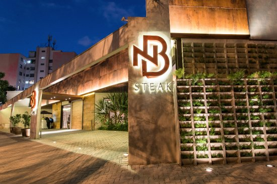

Fogo de Chão ( unidade Augusta ) 
Ambiente mais chique, destaque o menu de
entrada, com frutas, Hamón, palmito, frutas e
pelo atendimento. As carnes de boa qualidade
porém possui demora para servir. Um
restaurante com esse nome não pode deixar os
primeiros 20
minutos do
cliente apenas
com picanha,
costela
premium e
fraldinha.
Porém, após
um certo
tempo
realmente
aparecem
outros cortes,
não tão rico
como
barbacoa ou
jardineira,
porém o suficiente. Destaque para queijo com
mel e a bananinha frita caramelizada. Não tem
erro, clássico.

| Melhor Prato |
Preço Rodízio |
| Ancho e assado de tira |
R$ 210,00 |
Clique aqui para acessar o site e realizar reserva
D`Brescia
local
bonito, e também o
mais barato de todos,
chegando a 50 reais
em almoços de terça.
Pouca variedade de
carnes porém possui
carnes nobres. Bom
buffet de entradas e bom atendimento.
Qualidade das carnes média comparada a
outros rodízios

| Melhor Prato |
Preço Rodízio |
| carré de cordeiro |
R$ 140,00 |
Clique aqui para acessar o site e realizar reserva
Bovinu’s
casa muito
bonita mesclando o aspecto
de churrascaria tradicional e
decorações. Buffet bem
diversificado com entradas
todas de muita qualidade
como casquinha de siri,
bolinho de bacalhau e queijo com geleia de
morango. Carnes de boa qualidade e
diversificada. A crítica que deve ser feita é pela
demora de passar cortes melhores, cartaz
inexistente de frutos do mar e comida árabe.
Entretanto o grande diferencial é o self-service à
vontade de sobremesas que não se vê em
nenhum outro lugar dessa sessão.

| Melhor Prato |
Preço Rodízio |
| filé de cordeiro |
R$ 140,00 |
Clique aqui para acessar o site e realizar reserva
Boizão Grill
sem dúvidas a melhor custo
benefício, carnes boas com exceção do carré de
cordeiro, não é muito
saboroso, entretanto
tem um atendimento
bom, camarões pistola e
lagostim são o
diferencial. Bom pela
localização, saindo da
marginal, e pelo preço,
vale muito a pena pela
variedade e
acomodação.

| Melhor Prato |
Preço Rodízio |
| ancho |
R$ 85,00 |
Clique aqui para acessar o site e realizar reserva
Nativas
ambiente bonito a aconchegante,
com música ao vivo que da o diferencial,
nenhum outro desta sessão possui. Buffet
variado com
paeja e camarão,
além de sushis e
comida japonesa.
Carnes de
qualidade média
e atendimento
bom, embora a
demora para
trazer os cortes pedidos seja algo desanimador.
Preço justo ao que se serve

| Melhor Prato |
Preço Rodízio |
| fraldinha |
R$ 80,00 |
Clique aqui para acessar o site e realizar reserva
Nb Steak
de longe a pior de todas, o
único elogio que se deve fazer é ao corte da
casa, à picanha e apenas isso. Pouca variedade,
buffet péssimo ( nem tem praticamente ) alem
de ser caríssimo. Não vale a pena para nenhuma
ocasião. Um

| Melhor Prato |
Preço Rodízio |
| corte NB steak |
R$ 210,00 |